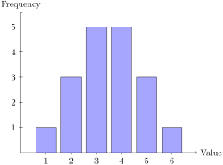
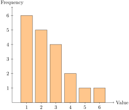
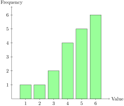

A quiz is graded out of 10 points. The results are summarized in Table 3.2.2.
Section 3.2 Center from Frequency Tables and the Shape of a Distribution
We can also compute mean, median, and mode from a frequency table. This is helpful when the raw data has already been summarized.
For a frequency table, the mean is a weighted average:
\begin{equation*}
\bar{x} = \frac{\sum x f}{\sum f}
\end{equation*}
Here \(x\) is a data value and \(f\) is its frequency. To find the mode, we look for the value with the highest frequency. To find the median, we locate the middle observation or middle two observations by using the cumulative frequency.
Example 3.2.1. Finding Center from a Frequency Table.
| Score \(x\) | Frequency \(f\) | \(x f\) | Cumulative frequency |
|---|---|---|---|
| 4 | 2 | 8 | 2 |
| 5 | 3 | 15 | 5 |
| 6 | 5 | 30 | 10 |
| 7 | 4 | 28 | 14 |
| 8 | 3 | 24 | 17 |
| 9 | 3 | 27 | 20 |
Since the total frequency is \(20\text{,}\) the mean is
\begin{equation*}
\bar{x}=\frac{8+15+30+28+24+27}{20}=\frac{132}{20}=6.6.
\end{equation*}
The mode is 6 because 6 has the highest frequency. To find the median, we note that the 10th observation is 6 and the 11th observation is 7, so the median is
\begin{equation*}
\frac{6+7}{2}=6.5.
\end{equation*}
Frequency tables are also useful because they connect naturally to the overall distribution of the data. When we look at a histogram or similar graph, we often describe the shape as symmetric, skewed right, or skewed left.
A symmetric distribution has roughly the same shape on the left and right of its center. In a perfectly symmetric distribution, the mean and median are equal.
A distribution is skewed right, or positively skewed, if most of the data is on the left and a longer tail stretches to the right. In that case, a few large values tend to pull the mean above the median.
A distribution is skewed left, or negatively skewed, if most of the data is on the right and a longer tail stretches to the left. In that case, a few small values tend to pull the mean below the median.
The sketches below show the basic shapes. They are not meant to be exact data sets. They are meant to make the idea of skewness easier to see at a glance.



Example 3.2.6. Reading Shape from Mean and Median.
A set of apartment rents has mean 1850 dollars and median 1725 dollars. Since the mean is larger than the median, this suggests the distribution is skewed right. That would make sense if most rents are moderate but a few luxury apartments are much more expensive.
This kind of comparison is useful, but it should not replace looking at a graph. In practice, the best way to judge skewness is to inspect a histogram or another graph of the distribution.
Activity 3.2.1. Mean and Median for Right-Skewed Data.
Use a class-style data set for commute times, in minutes. The values are right-skewed, so a few larger times pull the mean upward.
(a)
For the commute times 8, 9, 10, 10, 11, 12, 12, 13, 14, 30 minutes, find the mean and median.
(b)
Decide whether the mean or the median is a better description of the typical commute time.
(c)
State whether the distribution is skewed right, skewed left, or roughly symmetric, and check whether that matches the relationship between the mean and median.
Activity 3.2.2. Center from a Frequency Table.
Use a frequency table to practice the weighted-mean formula and the cumulative-frequency method for the median.
(a)
The frequency table in Table 3.2.7 shows the number of pets owned by students in a small class. Find the mean number of pets.
(b)
Use the same table to identify the mode and median.
(c)
Find the cumulative frequencies and use them to show how you located the median.
Activity 3.2.3. Center and Shape from Class Data.
Use a quantitative variable from the class data and compare its center with the shape of the distribution.
(a)
Choose one quantitative class variable and compute the mean and median.
(b)
Decide whether the distribution seems roughly symmetric, skewed right, or skewed left.
(c)
Check whether the mean is greater than, less than, or about equal to the median. Does that match the shape you saw?
Activity 3.2.4. Skewness Practice.
These short data sets are designed to make the effect of outliers easy to see.
(a)
For the data set 2, 3, 4, 4, 5, 6, 20, find the mean and median. Then decide whether the distribution is skewed left, skewed right, or roughly symmetric.
(b)
For the data set 12, 13, 13, 14, 15, 15, 16, find the mean and median. Then decide whether the distribution is skewed left, skewed right, or roughly symmetric.
(c)
In one sentence, explain why the mean is pulled toward the tail in the first data set but not much in the second.
So which measure of center should we use? There is no universal winner. The mean is informative when we want every observation to count fully, while the median is often more resistant to extreme values. The mode is especially useful for categorical data or for identifying the most common case.